pacman::p_load(sf, spdep, sfdep, tmap, tidyverse, knitr, ggrepel)Hands-on Exercise 5
Global and Local Measures of Spatial Autocorrelation
88 counties of Hunan, GDP per capita 2012 Hunan shapefile, Hunan_2012.csv sf spdep sfdep tmap tidyverse knitr ggrepel
1 Overview
Hands-on Exercise 4 built spatial weights for the 88 counties of Hunan and ended with a scatter plot slope of 0.30. Here I test that number and then break it down by county. This covers two chapters of the book.
Chapter 9 is about the global pattern. Is GDP per capita spread at random, or do rich counties sit next to rich counties? Moran’s I and Geary’s C each give one answer for the whole province. The correlogram shows how far the pattern reaches.
Chapter 10 is about the local pattern. If there is clustering, where is it? Local Moran’s I finds clusters and outliers, and Getis-Ord Gi* finds hot spots and cold spots.
2 Loading the Packages
sfdep is the new package. It wraps spdep so that neighbours, weights and local statistics are columns in an sf data frame. This suits a tidyverse pipe better than spdep’s separate objects. Chapter 9 uses spdep and chapter 10 uses sfdep, so I load both. sf, tmap and tidyverse do the same jobs as before. knitr prints tables with kable(), and ggrepel labels points without covering them.
3 Preparing the Data
These are the same three steps as in Exercise 4, plus a projection at the start.
st_read() of sf reads the county boundaries, and st_transform() projects them to UTM zone 49 north right away.
hunan <- st_read(dsn = "data/geospatial", layer = "Hunan") %>%
st_transform(crs = 32649)Reading layer `Hunan' from data source
`/Users/czxtom/Documents/Programming/GAA/ISSS626-GAA/Hands-on_Ex/Hands-on_Ex05/data/geospatial'
using driver `ESRI Shapefile'
Simple feature collection with 88 features and 7 fields
Geometry type: POLYGON
Dimension: XY
Bounding box: xmin: 108.7831 ymin: 24.6342 xmax: 114.2544 ymax: 30.12812
Geodetic CRS: WGS 84read_csv() of readr reads the 2012 indicators.
hunan2012 <- read_csv("data/aspatial/Hunan_2012.csv")left_join() of dplyr attaches the indicators by the shared County column, and select() keeps the name columns and GDPPC.
hunan <- left_join(hunan, hunan2012) %>%
select(NAME_2, ID_3, NAME_3, ENGTYPE_3, County, GDPPC)
CautionWhere I differ from the book
Chapter 9 keeps the data in WGS 84 and chapter 10 projects it to EPSG 32650, UTM zone 50 north. Hunan runs from about 108.8 to 114.3 degrees east, and zone 50 starts at 114. So almost all of Hunan is in zone 49. I use EPSG 32649 for both chapters, as in Exercise 4. The projection does not affect contiguity. It does affect the distance band in the hot spot section, so my cut-off will not match the book’s 60,799.91 m.
I also select columns by name rather than select(1:4, 7, 15), for the same reason as last time. The positions only work if the csv keeps its current layout.
4 Visualising Regional Development Indicator
tm_shape() and tm_polygons() of tmap draw GDPPC twice, once with equal intervals and once with quantiles. tmap_arrange() puts them side by side. Both legends sit outside their maps.
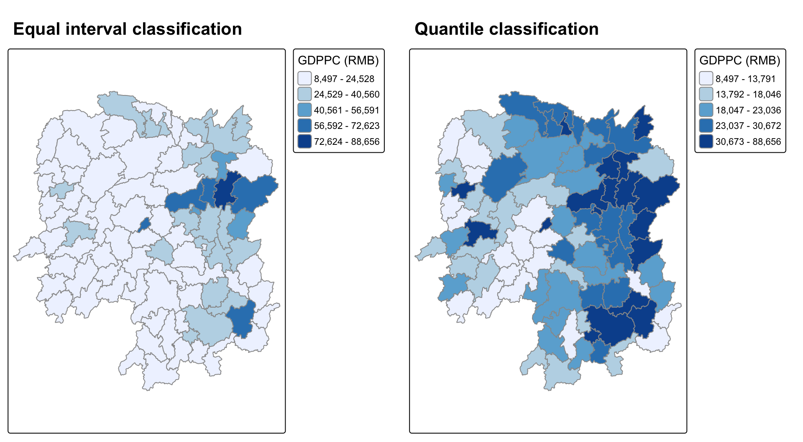
equal <- tm_shape(hunan) +
tm_polygons(fill = "GDPPC",
fill.scale = tm_scale_intervals(style = "equal", n = 5,
values = "brewer.blues"),
fill.legend = tm_legend(title = "GDPPC (RMB)",
position = tm_pos_out("right", "center")),
col = "grey60") +
tm_title("Equal interval classification", size = 1.3, fontface = "bold")
quantile <- tm_shape(hunan) +
tm_polygons(fill = "GDPPC",
fill.scale = tm_scale_intervals(style = "quantile", n = 5,
values = "brewer.blues"),
fill.legend = tm_legend(title = "GDPPC (RMB)",
position = tm_pos_out("right", "center")),
col = "grey60") +
tm_title("Quantile classification", size = 1.3, fontface = "bold")
tmap_arrange(equal, quantile, ncol = 2)The two maps look different even though the numbers are the same. Changsha at 88,656 RMB stretches the equal interval range so much that most counties fall in the bottom class. Only Changsha, the counties around it and one county in the south east stand out. Quantile classes put 17 or 18 counties in each band. This shows a gradient, with a dark block in the north east, a darker patch in the south east and a mostly pale west.
The book asks whether the maps show clusters, outliers, hot spots or cold spots. The quantile map looks clustered in the north east. A few dark counties sit alone among pale ones and could be outliers. But a choropleth cannot say whether the pattern is stronger than chance. Changing only the class breaks also changed what I saw. The rest of this exercise uses tests instead.
5 Global Measures of Spatial Autocorrelation
5.1 Computing Contiguity Spatial Weights
poly2nb() of spdep builds the Queen contiguity neighbour list. Two counties are neighbours if they share any boundary point.
wm_q <- poly2nb(hunan, queen = TRUE)
summary(wm_q)Neighbour list object:
Number of regions: 88
Number of nonzero links: 448
Percentage nonzero weights: 5.785124
Average number of links: 5.090909
Link number distribution:
1 2 3 4 5 6 7 8 9 11
2 2 12 16 24 14 11 4 2 1
2 least connected regions:
30 65 with 1 link
1 most connected region:
85 with 11 linksThere are 448 links for 88 counties, the same as the unprojected Queen list in Exercise 4. Projecting did not change which counties touch.
5.2 Row-standardised Weights Matrix
nb2listw() of spdep turns the neighbour list into weights. style = "W" divides each county’s weights by its number of neighbours. So the lag of a county is the simple average of its neighbours.
rswm_q <- nb2listw(wm_q, style = "W", zero.policy = TRUE)
rswm_qCharacteristics of weights list object:
Neighbour list object:
Number of regions: 88
Number of nonzero links: 448
Percentage nonzero weights: 5.785124
Average number of links: 5.090909
Weights style: W
Weights constants summary:
n nn S0 S1 S2
W 88 7744 88 37.86334 365.9147
NoteLearning diary
zero.policy = TRUE lets spdep accept a county with no neighbours instead of stopping with an error. Hunan has no such county, so it changes nothing here. The book always sets it, and it matters for data with islands.
6 Global Measures of Spatial Autocorrelation: Moran’s I
6.1 Moran’s I Test
moran.test() of spdep computes Moran’s I. It tests it against the null hypothesis that GDPPC is spread across the counties at random. The default alternative is "greater", so the test only looks for positive autocorrelation.
moran_gdppc <- moran.test(hunan$GDPPC,
listw = rswm_q,
zero.policy = TRUE,
na.action = na.omit)
moran_gdppc
Moran I test under randomisation
data: hunan$GDPPC
weights: rswm_q
Moran I statistic standard deviate = 4.7351, p-value = 1.095e-06
alternative hypothesis: greater
sample estimates:
Moran I statistic Expectation Variance
0.300749970 -0.011494253 0.004348351 Moran’s I is 0.301 against an expected value of -0.0115 under randomness. The p-value is 1.1e-06, far below 0.05, so I reject the null hypothesis. GDPPC in Hunan is positively autocorrelated. Rich counties tend to sit next to rich counties and poor ones next to poor ones.
ImportantCheck that caught something
In Exercise 4 I predicted this number before running any test. The slope of the neighbour average on GDPPC was 0.301. I argued that with row-standardised weights this slope equals Moran’s I. The test gives the same value to three decimals, so I was right. moran.test() adds the p-value.
6.2 Computing Monte Carlo Moran’s I
moran.mc() of spdep runs a permutation test instead. It shuffles GDPPC across the 88 counties 999 times and computes Moran’s I for each shuffle. Then it counts how often a shuffle beats the real map. set.seed() makes the result the same on every render.
set.seed(1234)
bperm <- moran.mc(hunan$GDPPC,
listw = rswm_q,
nsim = 999,
zero.policy = TRUE,
na.action = na.omit)
bperm
Monte-Carlo simulation of Moran I
data: hunan$GDPPC
weights: rswm_q
number of simulations + 1: 1000
statistic = 0.30075, observed rank = 1000, p-value = 0.001
alternative hypothesis: greaterThe observed I ranks 1000 out of 1000, above all 999 shuffles. This gives a p-value of 0.001, the same conclusion as the analytical test. A random arrangement of these values does not produce this clustering.
NoteLearning diary
The p-value of 0.001 is the lowest possible value here. With 999 shuffles plus the real map there are 1,000 values. The real map can at best rank first, so the smallest p-value is 1/1000. Running 9,999 shuffles would lower this floor but not change the conclusion. The analytical test can go much smaller because it uses a normal approximation instead of counting.
6.3 Visualising Monte Carlo Moran’s I
mean(), var() and summary() describe the 999 simulated values. bperm$res also holds the observed I as its last element. This is why the book slices [1:999].
mean(bperm$res[1:999])[1] -0.01504572var(bperm$res[1:999])[1] 0.004371574summary(bperm$res[1:999]) Min. 1st Qu. Median Mean 3rd Qu. Max.
-0.18339 -0.06168 -0.02125 -0.01505 0.02611 0.27593 The book asks me to redraw the histogram with ggplot2 instead of base graphics. geom_histogram() draws the 999 simulated values. The dashed line marks the expected value under randomness, -1/(n - 1), and the orange line marks the observed I.
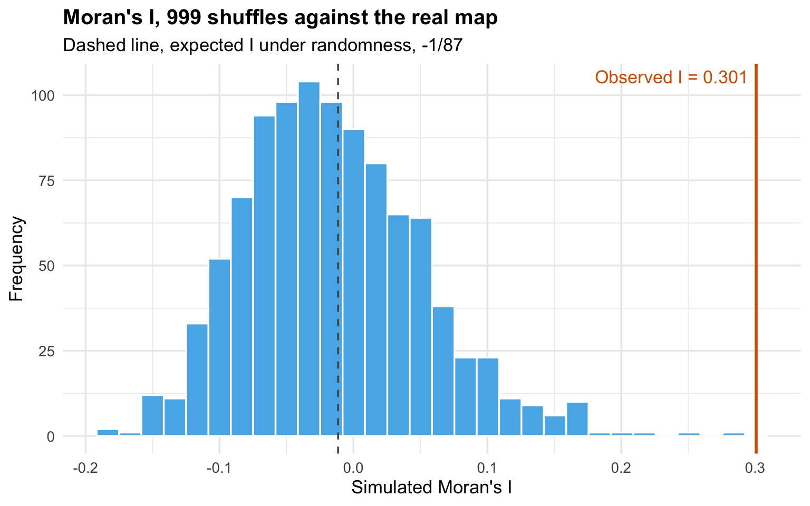
mc_moran <- tibble(sim = bperm$res[1:999])
ggplot(mc_moran, aes(x = sim)) +
geom_histogram(bins = 30, fill = "#56B4E9", colour = "white") +
geom_vline(xintercept = -1 / (nrow(hunan) - 1),
linetype = 2, colour = "grey30") +
geom_vline(xintercept = bperm$statistic,
colour = "#D55E00", linewidth = 1) +
annotate("text", x = bperm$statistic, y = Inf,
label = paste0("Observed I = ", round(bperm$statistic, 3)),
hjust = 1.05, vjust = 1.5, colour = "#D55E00", size = 4.5) +
labs(x = "Simulated Moran's I", y = "Frequency",
title = "Moran's I, 999 shuffles against the real map",
subtitle = "Dashed line, expected I under randomness, -1/87") +
theme_minimal(base_size = 13) +
theme(plot.title = element_text(size = 15, face = "bold"))The shuffles centre on -0.015, close to the expected -1/87, with a standard deviation of about 0.066. The highest of the 999 is 0.276. The observed 0.301 is beyond all of them, which matches the rank of 1000. The simulated distribution is slightly skewed to the right, so the normal approximation behind moran.test() is only approximate.
7 Global Measures of Spatial Autocorrelation: Geary’s C
7.1 Geary’s C Test
geary.test() of spdep computes Geary’s C. It works the opposite way to Moran’s I. The expected value under randomness is 1. Values below 1 mean neighbours are similar, and values above 1 mean they are different.
geary_gdppc <- geary.test(hunan$GDPPC, listw = rswm_q)
geary_gdppc
Geary C test under randomisation
data: hunan$GDPPC
weights: rswm_q
Geary C statistic standard deviate = 3.6108, p-value = 0.0001526
alternative hypothesis: Expectation greater than statistic
sample estimates:
Geary C statistic Expectation Variance
0.6907223 1.0000000 0.0073364 Geary’s C is 0.691, below the expected 1, with a p-value of 0.00015. So Geary’s C also rejects randomness. Like Moran’s I, it shows positive autocorrelation.
NoteLearning diary
The two statistics are built differently, so they can disagree. Moran’s I multiplies each county’s deviation from the mean by its neighbours’ deviations. It is a covariance and responds to the overall trend across the province. Geary’s C squares the difference between each pair of neighbours. It is closer to a local variance and responds more to sharp differences between next-door counties. Here they agree.
7.2 Computing Monte Carlo Geary’s C
geary.mc() of spdep runs the same permutation idea for Geary’s C.
set.seed(1234)
bperm_c <- geary.mc(hunan$GDPPC,
listw = rswm_q,
nsim = 999)
bperm_c
Monte-Carlo simulation of Geary C
data: hunan$GDPPC
weights: rswm_q
number of simulations + 1: 1000
statistic = 0.69072, observed rank = 1, p-value = 0.001
alternative hypothesis: greater
CautionWhere I differ from the book
The book stores this result in bperm again, which overwrites the Moran’s I permutations. I call it bperm_c so both stay available for the comparison below.
The observed C ranks 1, lower than every shuffle. For Geary’s C the small end is the extreme end. So a rank of 1 gives the same lowest p-value of 0.001.
7.3 Visualising the Monte Carlo Geary’s C
I use the same summaries and the same histogram, this time with the expected value at 1.
mean(bperm_c$res[1:999])[1] 1.004402var(bperm_c$res[1:999])[1] 0.007436493summary(bperm_c$res[1:999]) Min. 1st Qu. Median Mean 3rd Qu. Max.
0.7142 0.9502 1.0052 1.0044 1.0595 1.2722 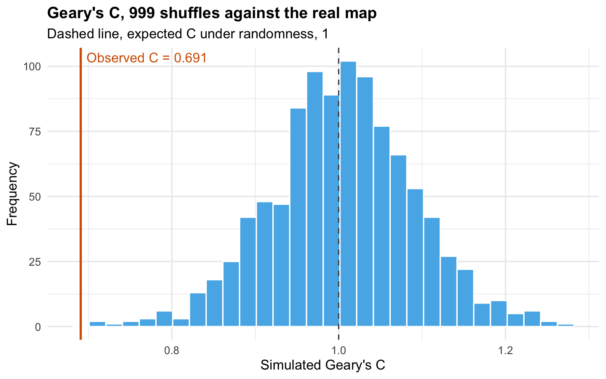
mc_geary <- tibble(sim = bperm_c$res[1:999])
ggplot(mc_geary, aes(x = sim)) +
geom_histogram(bins = 30, fill = "#56B4E9", colour = "white") +
geom_vline(xintercept = 1, linetype = 2, colour = "grey30") +
geom_vline(xintercept = bperm_c$statistic,
colour = "#D55E00", linewidth = 1) +
annotate("text", x = bperm_c$statistic, y = Inf,
label = paste0("Observed C = ", round(bperm_c$statistic, 3)),
hjust = -0.05, vjust = 1.5, colour = "#D55E00", size = 4.5) +
labs(x = "Simulated Geary's C", y = "Frequency",
title = "Geary's C, 999 shuffles against the real map",
subtitle = "Dashed line, expected C under randomness, 1") +
theme_minimal(base_size = 13) +
theme(plot.title = element_text(size = 15, face = "bold"))This plot is the mirror image of the Moran plot. The shuffles centre on 1.004, the lowest of them is 0.714, and the observed 0.691 is below all of them.
8 Spatial Correlogram
A correlogram repeats the global statistic at higher orders of contiguity. Lag 1 is the direct neighbours. Lag 2 is the neighbours of neighbours that are not direct neighbours, and so on up to lag 6. It shows how far the similarity reaches.
The book plots the result with base plot(). I take the estimate, expectation and variance out and redraw it with ggplot2. Each lag gets a two standard deviation bar and a colour for significance at 0.05. corr_table() does the extraction for both statistics.
corr_table <- function(corr) {
res <- as.data.frame(corr$res)
names(res) <- c("estimate", "expectation", "variance")
res %>%
mutate(lag = seq_len(n()),
sd = sqrt(variance),
z = (estimate - expectation) / sd,
signif = if_else(abs(z) > qnorm(0.975),
"Significant at 0.05", "Not significant"))
}
plot_corr <- function(tbl, ylab, title) {
ggplot(tbl, aes(x = lag, y = estimate, colour = signif)) +
geom_hline(aes(yintercept = expectation), linetype = 2, colour = "grey40") +
geom_errorbar(aes(ymin = estimate - 2 * sd, ymax = estimate + 2 * sd),
width = 0.15, linewidth = 0.8) +
geom_point(size = 3.5) +
scale_colour_manual(values = c("Significant at 0.05" = "#D55E00",
"Not significant" = "grey55")) +
scale_x_continuous(breaks = 1:6) +
labs(x = "Lag (order of contiguity)", y = ylab, colour = NULL,
title = title,
subtitle = "Bars span two standard deviations, dashed line is the value under randomness") +
theme_minimal(base_size = 13) +
theme(plot.title = element_text(size = 15, face = "bold"),
legend.position = "top")
}8.1 Compute Moran’s I Correlogram
sp.correlogram() of spdep computes Moran’s I at lags 1 to 6 with row-standardised weights.
MI_corr <- sp.correlogram(wm_q,
hunan$GDPPC,
order = 6,
method = "I",
style = "W")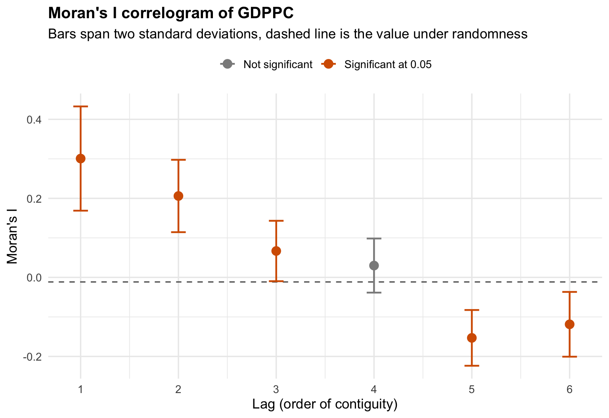
plot_corr(corr_table(MI_corr), "Moran's I",
"Moran's I correlogram of GDPPC")print() shows the numbers behind the plot, with a p-value for each lag.
print(MI_corr)Spatial correlogram for hunan$GDPPC
method: Moran's I
estimate expectation variance standard deviate Pr(I) two sided
1 (88) 0.3007500 -0.0114943 0.0043484 4.7351 2.189e-06 ***
2 (88) 0.2060084 -0.0114943 0.0020962 4.7505 2.029e-06 ***
3 (88) 0.0668273 -0.0114943 0.0014602 2.0496 0.040400 *
4 (88) 0.0299470 -0.0114943 0.0011717 1.2107 0.226015
5 (88) -0.1530471 -0.0114943 0.0012440 -4.0134 5.984e-05 ***
6 (88) -0.1187070 -0.0114943 0.0016791 -2.6164 0.008886 **
---
Signif. codes: 0 '***' 0.001 '**' 0.01 '*' 0.05 '.' 0.1 ' ' 1Similarity fades with distance and then turns negative. Lags 1 to 3 are positive and significant, at 0.30, 0.21 and 0.07. So a county is like its neighbours and its neighbours’ neighbours. Lag 4 looks random. Lags 5 and 6 are negative and significant, so counties five steps apart tend to be unlike each other. This fits one rich core with a poorer area around it. Five steps from the Changsha block reaches the far west and south, the other end of the income scale.
The p-values in print() are two-sided and not corrected. Six tests at 0.05 is a small multiple testing problem. But lags 1, 2 and 5 are so far below any threshold that the conclusion holds.
8.2 Compute Geary’s C Correlogram
This is the same six lags with Geary’s C.
GC_corr <- sp.correlogram(wm_q,
hunan$GDPPC,
order = 6,
method = "C",
style = "W")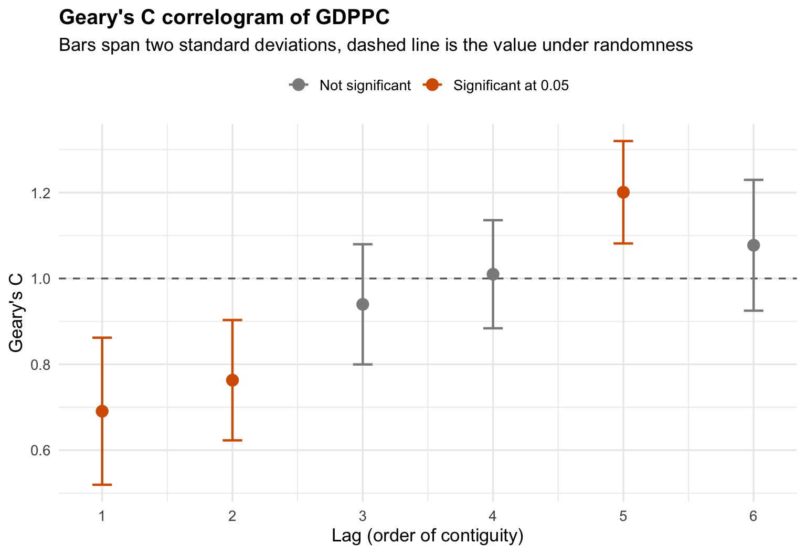
plot_corr(corr_table(GC_corr), "Geary's C",
"Geary's C correlogram of GDPPC")print(GC_corr)Spatial correlogram for hunan$GDPPC
method: Geary's C
estimate expectation variance standard deviate Pr(I) two sided
1 (88) 0.6907223 1.0000000 0.0073364 -3.6108 0.0003052 ***
2 (88) 0.7630197 1.0000000 0.0049126 -3.3811 0.0007220 ***
3 (88) 0.9397299 1.0000000 0.0049005 -0.8610 0.3892612
4 (88) 1.0098462 1.0000000 0.0039631 0.1564 0.8757128
5 (88) 1.2008204 1.0000000 0.0035568 3.3673 0.0007592 ***
6 (88) 1.0773386 1.0000000 0.0058042 1.0151 0.3100407
---
Signif. codes: 0 '***' 0.001 '**' 0.01 '*' 0.05 '.' 0.1 ' ' 1Geary’s C gives the same result in reverse. It is below 1 at lags 1 and 2, near 1 at lags 3 and 4, and above 1 at lag 5. It is less certain at the ends. Lags 3 and 6 are significant for Moran’s I but not for Geary’s C. This fits the learning diary note above. Geary’s C uses squared differences between the counties being compared. So it responds more to how alike those pairs are, and less to the broad north east against south west trend that Moran’s I picks up.
9 Local Indicators of Spatial Association (LISA)
The global tests say GDPPC clusters somewhere in Hunan, but not where. A LISA breaks the global statistic into one value per county. Anselin’s condition for a LISA is that the local values are proportional to the global one. So each local Moran’s I is that county’s share of the 0.30.
9.1 Computing Contiguity Spatial Weights with sfdep
st_contiguity() of sfdep builds the Queen neighbour list and st_weights() row-standardises it. Both go into the sf data frame as list columns, and .before = 1 puts them at the front.
hunan_q <- hunan %>%
mutate(nb = st_contiguity(geometry),
wt = st_weights(nb, style = "W"),
.before = 1)
summary(hunan_q$nb)Neighbour list object:
Number of regions: 88
Number of nonzero links: 448
Percentage nonzero weights: 5.785124
Average number of links: 5.090909
Link number distribution:
1 2 3 4 5 6 7 8 9 11
2 2 12 16 24 14 11 4 2 1
2 least connected regions:
30 65 with 1 link
1 most connected region:
85 with 11 links
CautionWhere I differ from the book
The book names this object wm_q, which replaces the spdep neighbour list from chapter 9. I call it hunan_q because it is the Hunan data with weights attached, not a weights object. The correlograms above also still need the old wm_q. The summary matches the spdep one, with 448 links, since sfdep calls spdep underneath.
9.2 Computing Local Moran’s I
local_moran() of sfdep computes local Moran’s I for every county and runs a permutation test for each. It returns a data frame per county, and unnest() of tidyr turns that into ordinary columns.
set.seed(1234)
lisa <- hunan_q %>%
mutate(local_moran = local_moran(GDPPC, nb, wt, nsim = 999),
.before = 1) %>%
unnest(local_moran)
glimpse(lisa)Rows: 88
Columns: 21
$ ii <dbl> -1.468468e-03, 2.587817e-02, -1.198765e-02, 1.022468e-03,…
$ eii <dbl> 5.194905e-05, 3.386676e-03, -2.050725e-02, 1.677027e-06, …
$ var_ii <dbl> 5.170509e-04, 1.050470e-02, 1.160620e-01, 5.577212e-06, 1…
$ z_ii <dbl> -0.06686456, 0.21944543, 0.02500774, 0.43224316, 0.425129…
$ p_ii <dbl> 9.466895e-01, 8.263031e-01, 9.800488e-01, 6.655647e-01, 6…
$ p_ii_sim <dbl> 0.798, 0.970, 0.774, 0.580, 0.606, 0.748, 0.048, 0.112, 0…
$ p_folded_sim <dbl> 0.399, 0.485, 0.387, 0.290, 0.303, 0.374, 0.024, 0.056, 0…
$ skewness <dbl> -1.0728711, -0.9674141, 1.1031694, 1.0937498, 0.8918350, …
$ kurtosis <dbl> 1.2305223, 1.0166190, 1.1714030, 1.2281892, 0.6858284, 0.…
$ mean <fct> Low-High, Low-Low, High-Low, High-High, High-High, High-L…
$ median <fct> High-High, High-High, High-High, High-High, High-High, Hi…
$ pysal <fct> Low-High, Low-Low, High-Low, High-High, High-High, High-L…
$ nb <nb> <2, 3, 4, 57, 85>, <1, 57, 58, 78, 85>, <1, 4, 5, 85>, <1,…
$ wt <list> <0.2, 0.2, 0.2, 0.2, 0.2>, <0.2, 0.2, 0.2, 0.2, 0.2>, <0…
$ NAME_2 <chr> "Changde", "Changde", "Changde", "Changde", "Changde", "C…
$ ID_3 <int> 21098, 21100, 21101, 21102, 21103, 21104, 21109, 21110, 2…
$ NAME_3 <chr> "Anxiang", "Hanshou", "Jinshi", "Li", "Linli", "Shimen", …
$ ENGTYPE_3 <chr> "County", "County", "County City", "County", "County", "C…
$ County <chr> "Anxiang", "Hanshou", "Jinshi", "Li", "Linli", "Shimen", …
$ GDPPC <dbl> 23667, 20981, 34592, 24473, 25554, 27137, 63118, 62202, 7…
$ geometry <POLYGON [m]> POLYGON ((602726.4 3292136,..., POLYGON ((619553.…The average of the 88 ii values is 0.301, the global Moran’s I from chapter 9. This checks Anselin’s condition on real numbers. With row-standardised weights the local values average to the global one exactly.
CautionWhere I differ from the book
The book uses nsim = 99. With 99 permutations the smallest possible p-value is 0.01. With 88 counties tested at once, this is too coarse to tell the strong clusters apart. 999 permutations take only a second or two, so I use 999 throughout, including the Gi* section.
The main columns are listed below.
| Column | Meaning |
|---|---|
ii |
Local Moran’s I for the county |
eii |
Its expected value under randomness |
var_ii |
Its variance |
z_ii |
The standard deviate, (ii - eii) / sqrt(var_ii) |
p_ii |
Analytical p-value from z_ii |
p_ii_sim |
Permutation p-value from the nsim shuffles |
p_folded_sim |
Permutation p-value using the folded method of pysal |
mean, median, pysal |
The quadrant label, High-High, Low-Low, Low-High or High-Low, with the centre taken at the mean, the median or pysal’s rule |
9.3 Mapping Local Moran’s I Values
tm_polygons() maps ii with pretty breaks. midpoint = 0 centres the diverging palette on zero. Blue means a county similar to its neighbours, and red means one that differs from them.
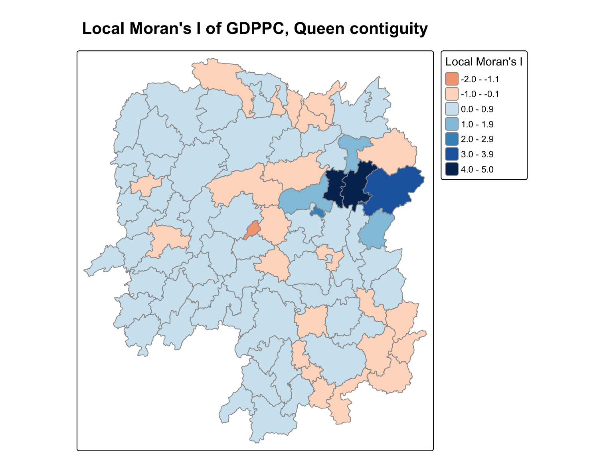
tm_shape(lisa) +
tm_polygons(fill = "ii",
fill.scale = tm_scale_intervals(style = "pretty", n = 5,
midpoint = 0,
values = "brewer.rd_bu"),
fill.legend = tm_legend(title = "Local Moran's I",
position = tm_pos_out("right", "center")),
col = "grey60") +
tm_title("Local Moran's I of GDPPC, Queen contiguity",
size = 1.5, fontface = "bold")Most of the province is just above zero, in pale blue. These counties are a little like their neighbours and add a little to the global 0.30. The strong contributions all come from a block of dark blue counties around Changsha, with local values of 3 to 5. The red counties have negative values and differ from their neighbours. They sit around the edge of that block and down the south east.
9.4 Mapping Local Moran’s I p-values
This is the same map for p_ii, with fixed breaks at the usual significance levels. The reversed reds make the smallest p-values darkest.
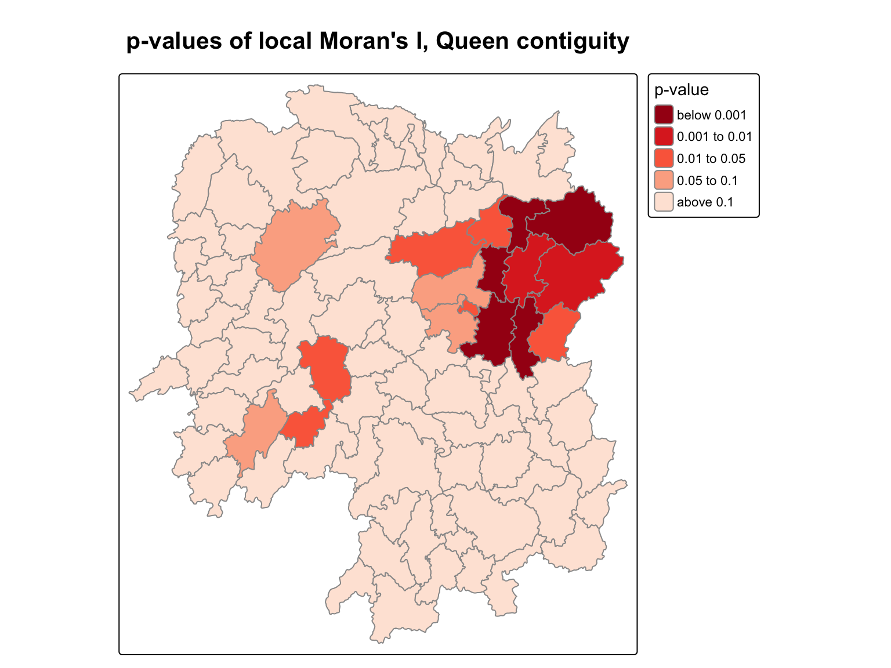
tm_shape(lisa) +
tm_polygons(fill = "p_ii",
fill.scale = tm_scale_intervals(
breaks = c(0, 0.001, 0.01, 0.05, 0.1, 1),
labels = c("below 0.001", "0.001 to 0.01", "0.01 to 0.05",
"0.05 to 0.1", "above 0.1"),
values = "-brewer.reds"),
fill.legend = tm_legend(title = "p-value",
position = tm_pos_out("right", "center")),
col = "grey60") +
tm_title("p-values of local Moran's I, Queen contiguity",
size = 1.5, fontface = "bold")9.5 Mapping Both Local Moran’s I Values and p-values
tmap_arrange() puts the two maps side by side, so I can read a county’s value and its significance together.
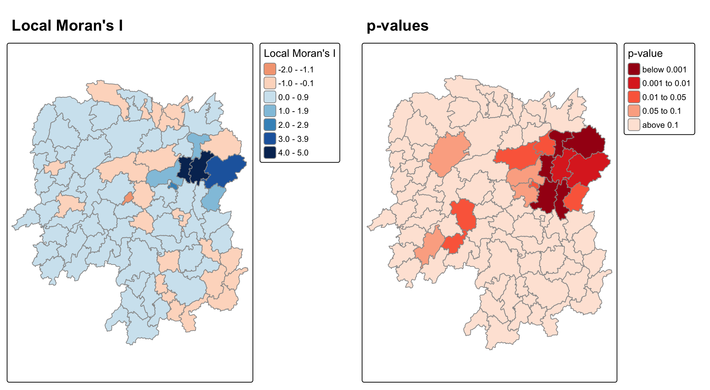
ii_map <- tm_shape(lisa) +
tm_polygons(fill = "ii",
fill.scale = tm_scale_intervals(style = "pretty", n = 5,
midpoint = 0,
values = "brewer.rd_bu"),
fill.legend = tm_legend(title = "Local Moran's I",
position = tm_pos_out("right", "center")),
col = "grey60") +
tm_title("Local Moran's I", size = 1.3, fontface = "bold")
p_ii_map <- tm_shape(lisa) +
tm_polygons(fill = "p_ii",
fill.scale = tm_scale_intervals(
breaks = c(0, 0.001, 0.01, 0.05, 0.1, 1),
labels = c("below 0.001", "0.001 to 0.01", "0.01 to 0.05",
"0.05 to 0.1", "above 0.1"),
values = "-brewer.reds"),
fill.legend = tm_legend(title = "p-value",
position = tm_pos_out("right", "center")),
col = "grey60") +
tm_title("p-values", size = 1.3, fontface = "bold")
tmap_arrange(ii_map, p_ii_map, ncol = 2)The dark blue block and the dark red p-values line up almost exactly. So the strongest local values are also the most significant. The south west is different. Its local values are small, but two counties there are significant. A modest positive value among consistently poor neighbours is still unlikely by chance. The value map alone would miss them.
10 Preparing and Visualising the LISA Map
10.1 Plotting the Moran Scatterplot
st_lag() of sfdep computes the spatial lag, the average GDPPC of each county’s neighbours.
lisa <- lisa %>%
mutate(lag_GDPPC = st_lag(GDPPC, nb, wt),
.before = 1)
CautionWhere I differ from the book
The book follows st_lag() with unnest(lag_GDPPC). st_lag() already returns a plain numeric vector with one value per county. There is nothing to unnest, so I leave that step out.
The Moran scatterplot puts each county’s GDPPC on the x axis and its lag on the y axis. Dashed lines split it into four quadrants. The colour is the quadrant sfdep assigned in the mean column. geom_text_repel() of ggrepel names the counties in the two outlier quadrants.
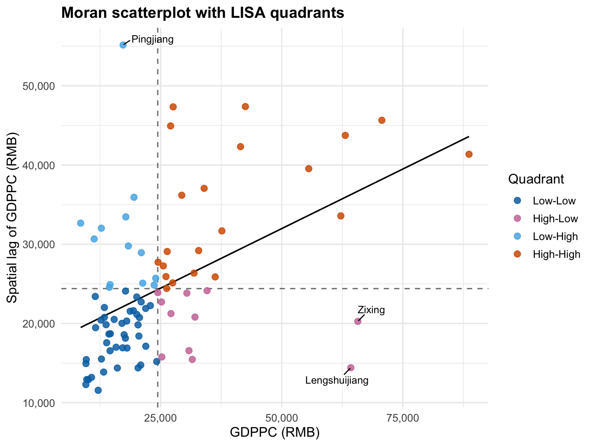
ggplot(lisa, aes(x = GDPPC, y = lag_GDPPC)) +
geom_hline(yintercept = mean(lisa$GDPPC), linetype = 2, colour = "grey50") +
geom_vline(xintercept = mean(lisa$GDPPC), linetype = 2, colour = "grey50") +
geom_smooth(method = "lm", se = FALSE, colour = "black", linewidth = 0.7) +
geom_point(aes(colour = mean), size = 2.5, alpha = 0.85) +
geom_text_repel(data = filter(lisa, mean %in% c("High-Low", "Low-High"),
GDPPC > 40000 | lag_GDPPC > 40000),
aes(label = NAME_3), size = 3.5, seed = 42,
box.padding = 0.5, min.segment.length = 0) +
scale_colour_manual(values = c("High-High" = "#D55E00", "Low-Low" = "#0072B2",
"Low-High" = "#56B4E9", "High-Low" = "#CC79A7")) +
scale_x_continuous(labels = scales::comma) +
scale_y_continuous(labels = scales::comma) +
labs(x = "GDPPC (RMB)", y = "Spatial lag of GDPPC (RMB)", colour = "Quadrant",
title = "Moran scatterplot with LISA quadrants") +
theme_minimal(base_size = 13) +
theme(plot.title = element_text(size = 15, face = "bold"))
CautionWhere I differ from the book
The book’s note says the upper right quadrant holds counties with high GDPPC “surrounded by average-level neighbouring areas”. This does not match what the quadrant means. Upper right is above the mean on both axes. So it is a High-High county, with high GDPPC and neighbours that are also high on average. Counties with average neighbours would sit near the horizontal dashed line, not in a corner.
The book draws the horizontal line at the mean of the lag. I draw both lines at the mean of GDPPC, because that is where the quadrant labels are cut. spdep, which sfdep calls underneath, centres GDPPC at its mean and then lags the centred values. So a county has high neighbours when its lag is above the mean of GDPPC, not the mean of the lag. summarise() counts how many counties’ labels agree with each line.
lisa %>%
st_drop_geometry() %>%
mutate(label_high = str_detect(mean, "-High$")) %>%
summarise(`Line at mean of GDPPC` = sum((lag_GDPPC > mean(GDPPC)) == label_high),
`Line at mean of the lag` = sum((lag_GDPPC > mean(lag_GDPPC)) == label_high))# A tibble: 1 × 2
`Line at mean of GDPPC` `Line at mean of the lag`
<int> <int>
1 88 88Both lines agree with all 88 labels. No county’s lag falls in the narrow gap between the mean of GDPPC and the mean of the lag. So here the book’s line and mine give the same quadrants. The difference only matters when a county sits in that gap.
The plot shows where the 0.30 comes from. Most counties are bottom left, poor with poor neighbours. The High-High group around Changsha pulls the line up. Pingjiang is the clearest Low-High county, a poor county whose neighbours average over 55,000 RMB. Zixing and Lengshuijiang are the clearest High-Low counties, rich mining towns among poorer ones. The LISA map shows which of these are significant.
10.2 Plotting the Moran Scatterplot with Standardised Variable
scale() turns GDPPC into z-scores. The axes are then in standard deviations and the quadrant lines sit at zero. st_lag() then lags the z-scores.
lisa <- lisa %>%
mutate(z_GDPPC = as.numeric(scale(GDPPC)),
z_lag_GDPPC = st_lag(z_GDPPC, nb, wt),
.before = 1)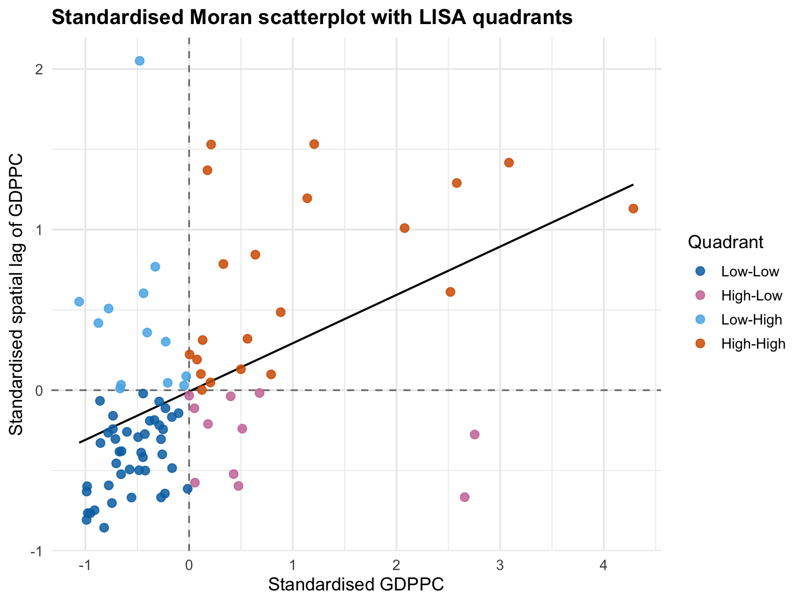
ggplot(lisa, aes(x = z_GDPPC, y = z_lag_GDPPC)) +
geom_hline(yintercept = 0, linetype = 2, colour = "grey50") +
geom_vline(xintercept = 0, linetype = 2, colour = "grey50") +
geom_smooth(method = "lm", se = FALSE, colour = "black", linewidth = 0.7) +
geom_point(aes(colour = mean), size = 2.5, alpha = 0.85) +
scale_colour_manual(values = c("High-High" = "#D55E00", "Low-Low" = "#0072B2",
"Low-High" = "#56B4E9", "High-Low" = "#CC79A7")) +
labs(x = "Standardised GDPPC", y = "Standardised spatial lag of GDPPC",
colour = "Quadrant",
title = "Standardised Moran scatterplot with LISA quadrants") +
theme_minimal(base_size = 13) +
theme(plot.title = element_text(size = 15, face = "bold"))
CautionWhere I differ from the book
The book standardises the lag separately with scale(lag_GDPPC), which divides it by its own standard deviation. This turns the slope of the fitted line into the simple correlation between a county and its neighbours, 0.485. It also puts the horizontal zero at the mean of the lag, which is not where the quadrant labels are cut.
Anselin’s standardised Moran scatterplot lags the z-scores instead. Both axes are divided by the same standard deviation. The slope stays at Moran’s I, and zero on both axes is exactly the quadrant boundary. The fitted slope here is 0.301, the same as moran.test(). I also wrap scale() in as.numeric(), because it returns a one-column matrix rather than a vector.
10.3 Preparing LISA Map Classes
signif holds the significance level, so I only set it in one place.
signif <- 0.05mutate() keeps the quadrant from the mean column where p_ii is below signif. Everything else is labelled Insignificant. factor() fixes the order of the classes, which also fixes the order of the colours on the map.
lisa <- lisa %>%
mutate(LISA_cluster = if_else(p_ii < signif,
as.character(mean),
"Insignificant"),
LISA_cluster = factor(LISA_cluster,
levels = c("Insignificant", "Low-Low", "Low-High",
"High-Low", "High-High")))
count(st_drop_geometry(lisa), LISA_cluster)# A tibble: 4 × 2
LISA_cluster n
<fct> <int>
1 Insignificant 75
2 Low-Low 2
3 Low-High 2
4 High-High 9
NoteLearning diary
The book defines signif <- 0.05 but then writes p_ii < 0.05. So changing the variable would not change the map. I use the variable.
10.4 Plotting and Visualising the LISA Map
tm_scale_categorical() gives each class a fixed colour. The palette matches the scatterplot. Insignificant is light grey so the significant counties stand out.
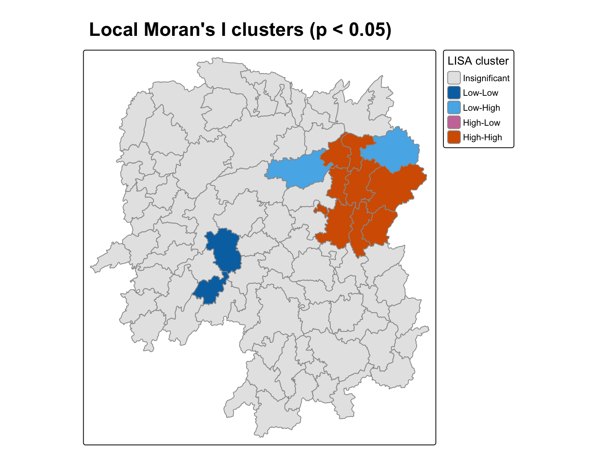
lisa_map <- tm_shape(lisa) +
tm_polygons(fill = "LISA_cluster",
fill.scale = tm_scale_categorical(
values = c("grey90", # Insignificant
"#0072B2", # Low-Low
"#56B4E9", # Low-High
"#CC79A7", # High-Low
"#D55E00" # High-High
)),
fill.legend = tm_legend(title = "LISA cluster",
position = tm_pos_out("right", "center")),
col = "grey60") +
tm_title("Local Moran's I clusters (p < 0.05)", size = 1.5, fontface = "bold")
lisa_mapfilter() and kable() list the counties behind the coloured polygons.
lisa %>%
st_drop_geometry() %>%
filter(LISA_cluster != "Insignificant") %>%
arrange(LISA_cluster, p_ii) %>%
transmute(County = NAME_3,
Cluster = LISA_cluster,
GDPPC,
`Neighbour average` = round(lag_GDPPC),
`Local Moran's I` = round(ii, 2),
p_ii = signif(p_ii, 2)) %>%
kable()| County | Cluster | GDPPC | Neighbour average | Local Moran’s I | p_ii |
|---|---|---|---|---|---|
| Wugang | Low-Low | 12112 | 11566 | 0.71 | 3.1e-02 |
| Longhui | Low-Low | 9572 | 12297 | 0.81 | 4.0e-02 |
| Pingjiang | Low-High | 17252 | 55158 | -0.99 | 7.2e-05 |
| Taojiang | Low-High | 19509 | 35934 | -0.25 | 3.6e-02 |
| Xiangtan | High-High | 27060 | 44940 | 0.25 | 1.8e-05 |
| Wangcheng | High-High | 70666 | 45651 | 4.42 | 5.7e-05 |
| Zhuzhou | High-High | 27589 | 47346 | 0.33 | 2.5e-04 |
| Miluo | High-High | 42497 | 47383 | 1.87 | 7.5e-04 |
| Changsha | High-High | 88656 | 41364 | 4.90 | 1.1e-03 |
| Liuyang | High-High | 63118 | 43747 | 3.37 | 8.9e-03 |
| Liling | High-High | 41491 | 42324 | 1.38 | 4.4e-02 |
| Xiangyin | High-High | 33983 | 37058 | 0.55 | 4.5e-02 |
| Shaoshan | High-High | 55570 | 39541 | 2.12 | 4.7e-02 |
Thirteen counties are significant at 0.05, which answers the book’s question about the map. Nine High-High counties form one block. They are Changsha, Wangcheng, Xiangtan, Zhuzhou, Miluo, Liuyang, Liling, Xiangyin and Shaoshan, the capital and the Changsha, Zhuzhou and Xiangtan area. This is the only significant high cluster in Hunan. Two Low-High counties sit on its edge. Pingjiang has a GDPPC of 17,252 RMB against a neighbour average of 55,158. Taojiang is similar on a smaller scale. They are poor counties next to the rich core. Wugang and Longhui in the south west are the only significant Low-Low cluster.
No High-Low county is significant. Zixing and Lengshuijiang are far from the line on the scatterplot, but neither passes 0.05. Being far from the line does not mean being significant.
Xiangtan and Zhuzhou surprised me. Their local values are small, 0.25 and 0.33, but their p-values are among the smallest. Their own GDPPC is only a little above average. But their neighbours are so consistently rich that even a small local value is unlikely by chance. Significance depends on the neighbourhood as much as the county.
11 Hot Spot and Cold Spot Analysis (HCSA)
Local Moran’s I asks whether a county is like its neighbours. Getis-Ord Gi* asks whether a county and its neighbours together are unusually high or low. It cannot see outliers, such as a rich county among poor ones. But it separates hot spots from cold spots clearly.
11.1 Deriving Distance Weight Matrix
Gi* is usually run with distance based weights. The book builds two kinds.
critical_threshold() of sfdep finds the smallest distance at which every county has at least one neighbour.
ct <- critical_threshold(st_geometry(hunan))
ct[1] 62954.89st_dist_band() makes every county within that distance a neighbour. include_self() adds each county to its own neighbour list, and st_weights() row-standardises.
hunan_fdw <- hunan %>%
mutate(nb = include_self(st_dist_band(st_geometry(geometry), upper = ct)),
wt = st_weights(nb, style = "W"),
.before = 1)st_knn() of sfdep takes each county’s six nearest neighbours instead of a fixed radius.
hunan_adw <- hunan %>%
mutate(nb = include_self(st_knn(st_geometry(geometry), k = 6)),
wt = st_weights(nb, style = "W"),
.before = 1)
NoteLearning diary
include_self() is what puts the star in Gi. The plain Gi statistic compares a county’s neighbours with the rest of the province and leaves the county out. Gi counts the county as part of its own neighbourhood. So one very rich county can make its own area a hot spot. This matters for Changsha, which is far richer than anything around it.
My cut-off is 63 km, against the book’s 60.8 km in zone 50. It also does not match Exercise 4, where the same UTM 49N projection with st_centroid() gave 58.3 km. The chunk below computes the cut-off from centroids and from st_point_on_surface() to see which point sfdep uses.
nn_cutoff <- function(pts) {
xy <- st_coordinates(pts)
max(unlist(nbdists(knn2nb(knearneigh(xy, k = 1)), xy)))
}
round(c(centroid = nn_cutoff(st_centroid(st_geometry(hunan))),
point_on_surface = nn_cutoff(st_point_on_surface(st_geometry(hunan))),
sfdep = ct)) centroid point_on_surface sfdep
58337 62955 62955 The sfdep cut-off matches the point on surface version exactly. The centroid version gives the 58.3 km from Exercise 4. So sfdep measures from st_point_on_surface(), a point that always falls inside each polygon, not from the centroid. The difference between the two exercises came from the point used for each county, not from the projection.
11.2 Computing Local Gi* Statistics
local_gstar_perm() of sfdep computes Gi* for each county on the fixed distance weights and runs a permutation test for each. unnest() turns the result into columns.
set.seed(1234)
HCSA_fdw <- hunan_fdw %>%
mutate(gistar = local_gstar_perm(GDPPC, nb, wt, nsim = 999),
.before = 1) %>%
unnest(gistar)
glimpse(HCSA_fdw)Rows: 88
Columns: 19
$ gi_star <dbl> 0.38306332, -0.34046184, 0.23257243, 0.36406563, 0.217412…
$ cluster <fct> Low, Low, High, High, High, High, High, High, High, Low, …
$ e_gi <dbl> 0.011238957, 0.010946123, 0.012084226, 0.011477310, 0.011…
$ var_gi <dbl> 6.543550e-06, 7.557345e-06, 7.548837e-06, 9.812248e-06, 6…
$ std_dev <dbl> 0.460762839, -0.223671403, -0.005585977, 0.360108382, 0.2…
$ p_value <dbl> 6.449688e-01, 8.230130e-01, 9.955431e-01, 7.187661e-01, 8…
$ p_sim <dbl> 0.544, 0.996, 0.810, 0.536, 0.696, 0.938, 0.052, 0.034, 0…
$ p_folded_sim <dbl> 0.272, 0.498, 0.405, 0.268, 0.348, 0.469, 0.026, 0.017, 0…
$ skewness <dbl> 1.0844673, 0.9983501, 1.1184257, 1.2759585, 0.9431153, 1.…
$ kurtosis <dbl> 1.4615396, 0.8064166, 1.4782723, 1.6020628, 0.6884654, 2.…
$ nb <nb> <1, 3, 4, 5, 57, 64>, <2, 57, 58, 78, 85>, <1, 3, 4, 5, 57…
$ wt <list> <0.1666667, 0.1666667, 0.1666667, 0.1666667, 0.1666667, …
$ NAME_2 <chr> "Changde", "Changde", "Changde", "Changde", "Changde", "C…
$ ID_3 <int> 21098, 21100, 21101, 21102, 21103, 21104, 21109, 21110, 2…
$ NAME_3 <chr> "Anxiang", "Hanshou", "Jinshi", "Li", "Linli", "Shimen", …
$ ENGTYPE_3 <chr> "County", "County", "County City", "County", "County", "C…
$ County <chr> "Anxiang", "Hanshou", "Jinshi", "Li", "Linli", "Shimen", …
$ GDPPC <dbl> 23667, 20981, 34592, 24473, 25554, 27137, 63118, 62202, 7…
$ geometry <POLYGON [m]> POLYGON ((602726.4 3292136,..., POLYGON ((619553.…gi_star is the statistic, a z-score. Large positive values mark high-value neighbourhoods and large negative values mark low-value ones. p_sim is its permutation p-value. cluster is a High or Low label. As the check below shows, it does not mean what it seems to mean.
11.3 Mapping Gi* with Fixed Distance Weights
midpoint = 0 again centres the palette. The reversed red-blue scale makes positive Gi* red, the usual colour for heat.
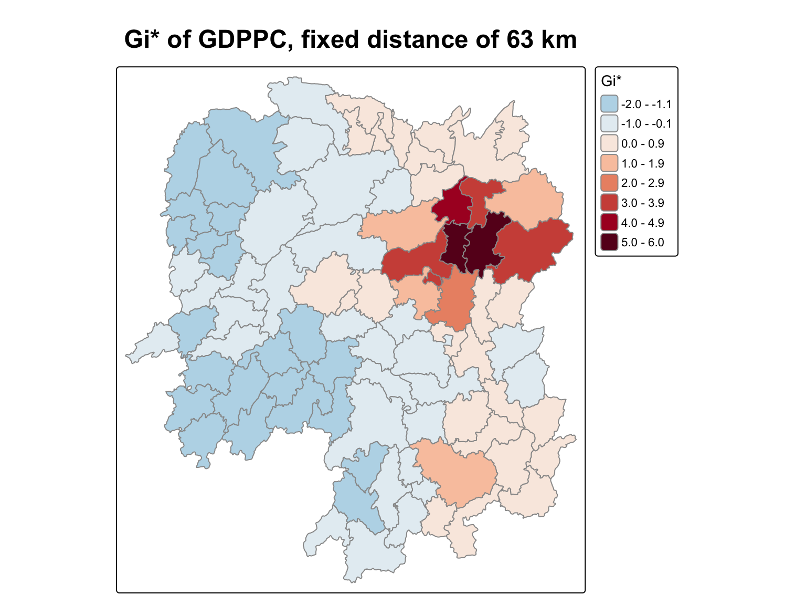
tm_shape(HCSA_fdw) +
tm_polygons(fill = "gi_star",
fill.scale = tm_scale_intervals(style = "pretty", n = 6,
midpoint = 0,
values = "-brewer.rd_bu"),
fill.legend = tm_legend(title = "Gi*",
position = tm_pos_out("right", "center")),
col = "grey60") +
tm_title(paste0("Gi* of GDPPC, fixed distance of ", round(ct / 1000, 1), " km"), size = 1.5, fontface = "bold")
CautionWhere I differ from the book
The book hard-codes the distance into the title as “d = 60799.91m”. I build mine from ct, so the title stays correct if the data or the projection changes.
11.4 Mapping Local Gi* p-values
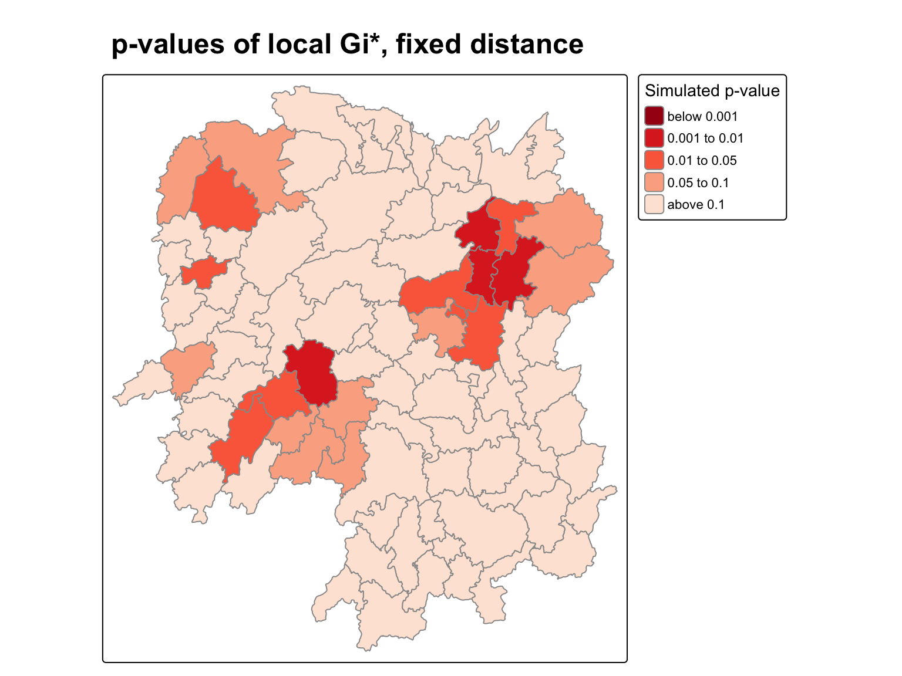
tm_shape(HCSA_fdw) +
tm_polygons(fill = "p_sim",
fill.scale = tm_scale_intervals(
breaks = c(0, 0.001, 0.01, 0.05, 0.1, 1),
labels = c("below 0.001", "0.001 to 0.01", "0.01 to 0.05",
"0.05 to 0.1", "above 0.1"),
values = "-brewer.reds"),
fill.legend = tm_legend(title = "Simulated p-value",
position = tm_pos_out("right", "center")),
col = "grey60") +
tm_title("p-values of local Gi*, fixed distance", size = 1.5, fontface = "bold")11.5 Mapping Both Gi* Values and p-values
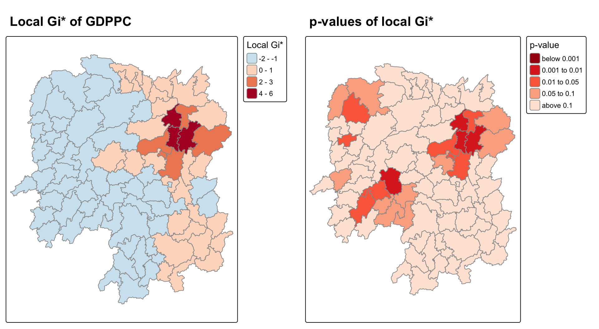
Gi_star_map <- tm_shape(HCSA_fdw) +
tm_polygons(fill = "gi_star",
fill.scale = tm_scale_intervals(style = "pretty", n = 5,
midpoint = 0,
values = "-brewer.rd_bu"),
fill.legend = tm_legend(title = "Local Gi*",
position = tm_pos_out("right", "center")),
col = "grey60") +
tm_title("Local Gi* of GDPPC", size = 1.3, fontface = "bold")
p_values_map <- tm_shape(HCSA_fdw) +
tm_polygons(fill = "p_sim",
fill.scale = tm_scale_intervals(
breaks = c(0, 0.001, 0.01, 0.05, 0.1, 1),
labels = c("below 0.001", "0.001 to 0.01", "0.01 to 0.05",
"0.05 to 0.1", "above 0.1"),
values = "-brewer.reds"),
fill.legend = tm_legend(title = "p-value",
position = tm_pos_out("right", "center")),
col = "grey60") +
tm_title("p-values of local Gi*", size = 1.3, fontface = "bold")
tmap_arrange(Gi_star_map, p_values_map, ncol = 2)Gi* is highest, at 5 to 6, around Changsha. A band of positive values runs from there down the east side. The west is negative almost everywhere. On the p-value map the Changsha area is the strongest signal. Two patches in the west, one in the north west and one in the south west, are also below 0.05. On the value map they are pale blue, low-value neighbourhoods.
11.6 Plotting and Visualising the HCSA Map
case_when() labels each county. Above 0.05 it is Insignificant. Otherwise it is a hot spot when Gi* is positive and a cold spot when Gi* is negative. I wrap the rule in classify_hcsa() because I use it again on the adaptive weights in Beyond the Exercise.
classify_hcsa <- function(df) {
df %>%
mutate(HCSA_cluster = case_when(
p_sim > signif ~ "Insignificant",
gi_star > 0 ~ "Hot spot",
gi_star < 0 ~ "Cold spot"),
HCSA_cluster = factor(HCSA_cluster,
levels = c("Insignificant", "Hot spot", "Cold spot")),
.before = 1)
}
HCSA_fdw <- classify_hcsa(HCSA_fdw)
count(st_drop_geometry(HCSA_fdw), HCSA_cluster)# A tibble: 3 × 2
HCSA_cluster n
<fct> <int>
1 Insignificant 74
2 Hot spot 7
3 Cold spot 7
CautionWhere I differ from the book
The book decides hot or cold from the cluster column. I use the sign of Gi*, for the reason in the check below. The book’s version also has a fourth branch, TRUE ~ "Other", which can never run. Its colour comments say Low-Low and High-High next to the hot and cold colours, left over from the LISA map. I drop the unused branch and label the colours correctly.
ImportantCheck that caught something
My first run used the book’s rule. The adaptive weights map in Beyond the Exercise then showed cold spots right next to Changsha, in the richest part of Hunan. That cannot be a cold spot. In the glimpse() output above, cluster does not follow Gi* at all. Anxiang has a positive Gi* and Hanshou a negative one, but both are labelled Low. cluster actually tracks the county’s own GDPPC against the provincial mean, like the High and Low halves of a LISA quadrant.
So the book’s rule calls a poor county a cold spot even inside a significant high-value neighbourhood. It also calls a rich county a hot spot inside a low one. Gi* describes the neighbourhood, not the county, so its sign should decide. The table below crosses the two for the significant counties.
HCSA_fdw %>%
st_drop_geometry() %>%
mutate(`Own GDPPC above mean` = GDPPC > mean(GDPPC)) %>%
count(cluster, `Own GDPPC above mean`)# A tibble: 2 × 3
cluster `Own GDPPC above mean` n
<fct> <lgl> <int>
1 Low FALSE 56
2 High TRUE 32HCSA_fdw %>%
st_drop_geometry() %>%
filter(p_sim <= signif, (gi_star > 0) != (cluster == "High")) %>%
transmute(County = NAME_3, GDPPC, `Gi*` = round(gi_star, 2),
cluster, p_sim) %>%
kable()| County | GDPPC | Gi* | cluster | p_sim |
|---|---|---|---|---|
| Jishou | 31537 | -1.37 | High | 0.034 |
The first table confirms this. All 56 counties labelled Low are below the provincial mean GDPPC, and all 32 labelled High are above it. So cluster only reflects the county’s own value. On the fixed distance weights only one significant county is affected, Jishou. Its GDPPC of 31,537 RMB is above average, so the book’s rule calls it a hot spot. But its Gi* is -1.37, a low-value neighbourhood, so it is a cold spot. On the adaptive weights the book’s rule mislabelled more counties, which is how I noticed.
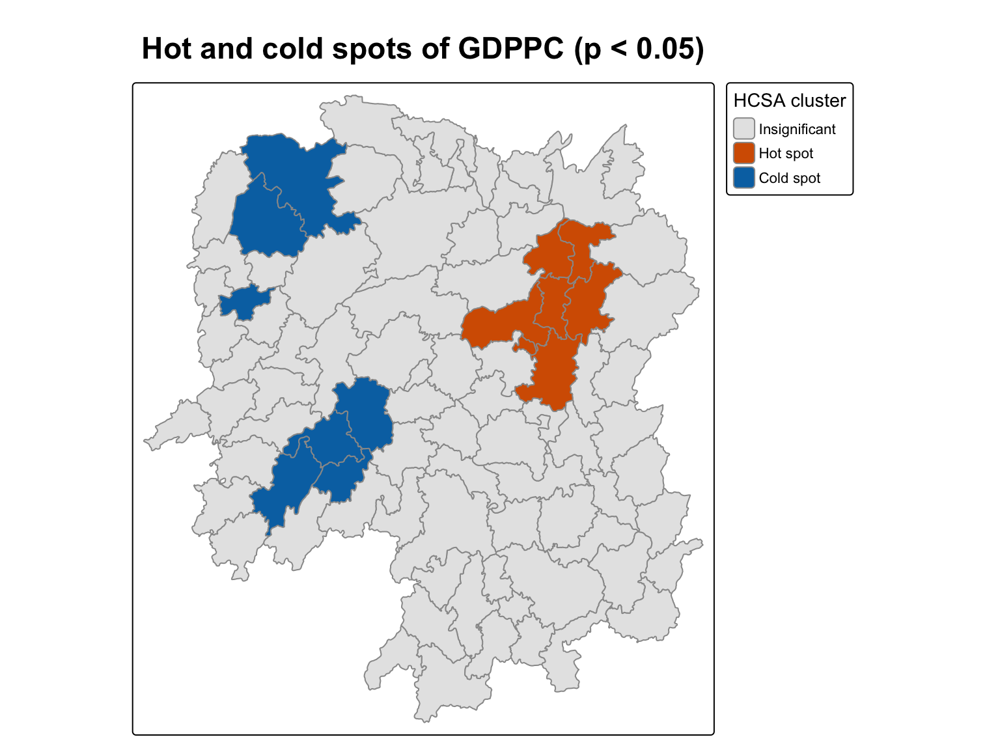
HCSA_map <- tm_shape(HCSA_fdw) +
tm_polygons(fill = "HCSA_cluster",
fill.scale = tm_scale_categorical(
values = c("grey90", # Insignificant
"#D55E00", # Hot spot
"#0072B2" # Cold spot
)),
fill.legend = tm_legend(title = "HCSA cluster",
position = tm_pos_out("right", "center")),
col = "grey60") +
tm_title("Hot and cold spots of GDPPC (p < 0.05)", size = 1.5, fontface = "bold")
HCSA_maptmap_arrange() puts the Gi* values next to the classes, so I can see the strength of each hot spot next to its label.
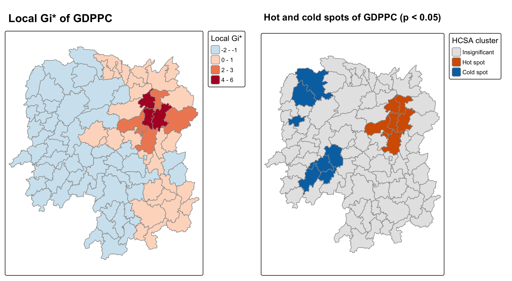
tmap_arrange(Gi_star_map, HCSA_map, ncol = 2)HCSA_fdw %>%
st_drop_geometry() %>%
filter(HCSA_cluster != "Insignificant") %>%
arrange(HCSA_cluster, desc(abs(gi_star))) %>%
transmute(County = NAME_3,
Class = HCSA_cluster,
GDPPC,
`Gi*` = round(gi_star, 2),
p_sim) %>%
kable()| County | Class | GDPPC | Gi* | p_sim |
|---|---|---|---|---|
| Wangcheng | Hot spot | 70666 | 5.51 | 0.002 |
| Changsha | Hot spot | 88656 | 5.43 | 0.006 |
| Xiangyin | Hot spot | 33983 | 4.30 | 0.004 |
| Shaoshan | Hot spot | 55570 | 3.77 | 0.016 |
| Miluo | Hot spot | 42497 | 3.54 | 0.012 |
| Ningxiang | Hot spot | 62202 | 3.54 | 0.034 |
| Xiangtan | Hot spot | 27060 | 2.79 | 0.020 |
| Longhui | Cold spot | 9572 | -1.97 | 0.006 |
| Yongshun | Cold spot | 9590 | -1.78 | 0.026 |
| Suining | Cold spot | 16069 | -1.77 | 0.020 |
| Dongkou | Cold spot | 13240 | -1.64 | 0.036 |
| Wugang | Cold spot | 12112 | -1.55 | 0.050 |
| Jishou | Cold spot | 31537 | -1.37 | 0.034 |
| Sangzhi | Cold spot | 14624 | -1.17 | 0.050 |
There are seven hot spots and seven cold spots. The hot spots are Wangcheng, Changsha, Xiangyin, Shaoshan, Miluo, Ningxiang and Xiangtan. Wangcheng and Changsha are strongest, with Gi* above 5. The cold spots form two groups in the west. One is Yongshun and Sangzhi in the north west, with Jishou just south of them. The other is Longhui, Suining, Dongkou and Wugang in the south west.
Compared with the LISA map, the two methods agree on the core and differ at the edges. Ningxiang is a hot spot but not High-High. Liuyang, Zhuzhou and Liling are High-High but not hot spots. Gi* finds a cold spot in the north west that LISA missed. Gi* also cannot flag Pingjiang or Taojiang as different from their surroundings. A poor county among rich ones just becomes part of its neighbourhood’s average. The two methods measure different things, so their maps differ.
12 Beyond the Exercise
12.1 Does Moran’s I Survive a Different Weights Matrix
Exercise 4 ended with the point that the weights matrix is a choice I make. Every test above used Queen contiguity. Below I rerun moran.test() with four neighbour rules from that exercise, all row-standardised, to see whether the answer depends on the choice. The distance rules use the county centroids in UTM 49N and the cut-off ct from the hot spot section.
coords <- st_centroid(st_geometry(hunan))
w_list <- list(
"Queen contiguity" = nb2listw(poly2nb(hunan, queen = TRUE), style = "W"),
"Rook contiguity" = nb2listw(poly2nb(hunan, queen = FALSE), style = "W"),
"Fixed distance" = nb2listw(dnearneigh(coords, 0, ct),
style = "W", zero.policy = TRUE),
"Six nearest neighbours" = nb2listw(knn2nb(knearneigh(coords, k = 6)),
style = "W")
)
moran_by_w <- imap_dfr(w_list, function(lw, rule) {
t <- moran.test(hunan$GDPPC, listw = lw, zero.policy = TRUE)
tibble(`Neighbour rule` = rule,
`Average neighbours` = round(mean(card(lw$neighbours)), 1),
`Moran's I` = round(t$estimate[["Moran I statistic"]], 3),
`Standard deviate` = round(t$statistic[[1]], 2),
`p-value` = format.pval(t$p.value, digits = 2, eps = 1e-8))
})
kable(moran_by_w)| Neighbour rule | Average neighbours | Moran’s I | Standard deviate | p-value |
|---|---|---|---|---|
| Queen contiguity | 5.1 | 0.301 | 4.74 | 1.1e-06 |
| Rook contiguity | 5.0 | 0.308 | 4.81 | 7.5e-07 |
| Fixed distance | 3.8 | 0.409 | 5.32 | 5.1e-08 |
| Six nearest neighbours | 6.0 | 0.317 | 5.98 | <1e-08 |
Every rule gives a positive Moran’s I far beyond chance. So the main result does not depend on the weights, but the size does. Queen, Rook and six nearest neighbours are within 0.02 of each other, between 0.30 and 0.32. The fixed distance rule gives 0.41. It has the fewest neighbours, 3.8 on average, all close. Fewer and nearer neighbours are more alike, so the statistic goes up.
TipAlternative explored
Here I measured the effect of the weights choice from Exercise 4. It did not change whether GDPPC is clustered. But it moved Moran’s I by more than a third, from 0.30 to 0.41. So a Moran’s I value cannot be compared without its weights rule. A report should name the rule every time it quotes one.
12.2 Analytical Against Permutation p-values
The LISA map above follows the book and uses p_ii, the analytical p-value. It treats z_ii as a standard normal, which assumes GDPPC is roughly normal. It is not. Changsha is at 88,656 RMB and the median county is near 20,000, so there is a long right tail. The permutation p-value p_ii_sim does not need this assumption. Anselin (1995) recommends the permutation approach for this reason.
There is a second problem. The map runs 88 tests at 0.05 at once, so about four counties would be significant even if GDPPC were random. p.adjust() with the false discovery rate method is one standard correction for this.
summarise() counts how many counties fall below 0.05 under each version.
lisa %>%
st_drop_geometry() %>%
summarise(`Analytical, p_ii` = sum(p_ii < signif),
`Permutation, p_ii_sim` = sum(p_ii_sim < signif),
`Folded permutation, p_folded_sim` = sum(p_folded_sim < signif),
`Permutation after FDR correction` =
sum(p.adjust(p_ii_sim, method = "fdr") < signif)) %>%
pivot_longer(everything(),
names_to = "p-value used",
values_to = "Counties below 0.05") %>%
kable()| p-value used | Counties below 0.05 |
|---|---|
| Analytical, p_ii | 13 |
| Permutation, p_ii_sim | 16 |
| Folded permutation, p_folded_sim | 23 |
| Permutation after FDR correction | 0 |
The two cluster maps below use the same colours. The book’s version is on the left and the permutation version on the right.
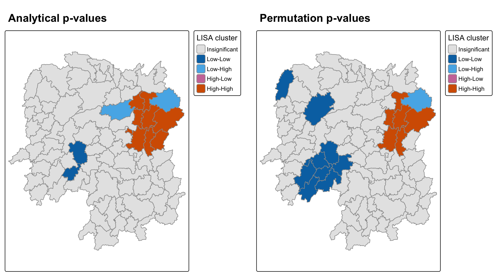
lisa <- lisa %>%
mutate(LISA_sim = if_else(p_ii_sim < signif,
as.character(mean), "Insignificant"),
LISA_sim = factor(LISA_sim, levels = levels(LISA_cluster)))
cluster_map <- function(var, title) {
tm_shape(lisa) +
tm_polygons(fill = var,
fill.scale = tm_scale_categorical(
values = c("grey90", # Insignificant
"#0072B2", # Low-Low
"#56B4E9", # Low-High
"#CC79A7", # High-Low
"#D55E00" # High-High
)),
fill.legend = tm_legend(title = "LISA cluster",
position = tm_pos_out("right", "center")),
col = "grey60") +
tm_title(title, size = 1.3, fontface = "bold")
}
tmap_arrange(cluster_map("LISA_cluster", "Analytical p-values"),
cluster_map("LISA_sim", "Permutation p-values"),
ncol = 2)
TipAlternative explored
The choice of p-value changes the map. The analytical p-value finds 13 significant counties, the permutation p-value finds 16, and the folded permutation p-value finds 23. The folded version is in effect one-sided and roughly halves every p-value. The permutation map drops the Low-High county west of Changsha. It adds a larger Low-Low area in the south west and a new one in the north west. Only the High-High core around Changsha stays in every version.
After the false discovery rate correction, none of the 88 counties is significant. With 999 permutations no p-value can go below about 0.001. The correction needs many values that small before it lets any through. It also assumes the tests are independent, but neighbouring counties share neighbours. So the LISA map shows where to look, not a list of proven clusters. Anselin says the same in the 1995 paper. He treats the local p-values as approximate and suggests a Bonferroni style bound as the conservative option.
12.3 Fixed Against Adaptive Hot Spots
The book builds hunan_adw, the six nearest neighbour weights, but never uses it. I run the same Gi* test on those weights to see whether the hot and cold spots depend on the neighbour rule.
set.seed(1234)
HCSA_adw <- hunan_adw %>%
mutate(gistar = local_gstar_perm(GDPPC, nb, wt, nsim = 999),
.before = 1) %>%
unnest(gistar) %>%
classify_hcsa()
count(st_drop_geometry(HCSA_adw), HCSA_cluster)# A tibble: 3 × 2
HCSA_cluster n
<fct> <int>
1 Insignificant 69
2 Hot spot 11
3 Cold spot 8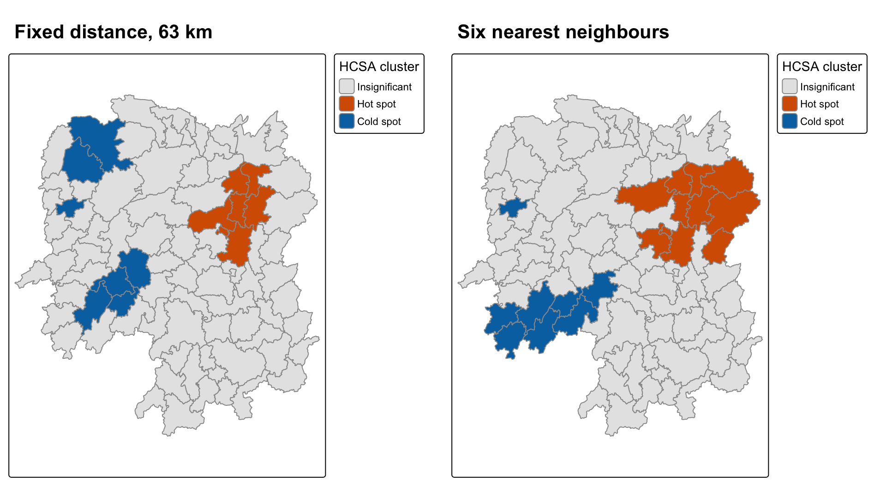
hcsa_map <- function(df, title) {
tm_shape(df) +
tm_polygons(fill = "HCSA_cluster",
fill.scale = tm_scale_categorical(
values = c("grey90", # Insignificant
"#D55E00", # Hot spot
"#0072B2" # Cold spot
)),
fill.legend = tm_legend(title = "HCSA cluster",
position = tm_pos_out("right", "center")),
col = "grey60") +
tm_title(title, size = 1.3, fontface = "bold")
}
tmap_arrange(hcsa_map(HCSA_fdw, paste0("Fixed distance, ", round(ct / 1000, 1), " km")),
hcsa_map(HCSA_adw, "Six nearest neighbours"),
ncol = 2)
TipAlternative explored
The hot and cold spots move with the neighbour rule. With six nearest neighbours there are 11 hot spots and 8 cold spots, against 7 and 7 on the fixed band. The hot core grows east to include Pingjiang and west to include Taojiang. The south western cold belt gets longer, and the north western cold group shrinks to a single county.
The rules disagree most in the north west. Its counties are large and far apart. So the fixed band gives them few neighbours, and a few poor counties dominate their own neighbourhood. Six nearest neighbours always reach six counties, often further away, which dilutes them. The core around Changsha and the south western belt appear under both rules, so I trust those most. The north western cold spot depends on the rule.
13 Limitations
- One year and one variable. Everything here is GDPPC in 2012, so I cannot tell whether the clusters are stable.
- The local maps run 88 tests at once. After a false discovery rate correction nothing is significant. So the LISA and Gi* maps are exploratory and only show where to look.
- Permutation p-values change with the seed and the number of shuffles. Wugang and Sangzhi are at exactly 0.050, and my rule counts 0.050 as significant. Another seed could drop them.
- The weights rule changes the results. Moran’s I ranges from 0.30 to 0.41 across four reasonable rules. The hot and cold spots shift between fixed and adaptive weights.
- County boundaries are administrative. The rich core around Changsha is made of small units while the western counties are large. So the same wealth is counted in more units in the east. Different boundaries could change which clusters come out significant.
14 Reflections
Here are four things I learned from this exercise.
Moran’s I matched my Exercise 4 slope. Exercise 4’s fitted slope was 0.301. moran.test() returned 0.301, and the 88 local values average to 0.301. Seeing the same number three times made the local statistics much easier to trust.
The cluster column is the county’s own value. A column called cluster with values High and Low looks like a hot spot label. It is actually the county’s own value against the mean. I found out because a map showed cold spots next to Changsha, and checking glimpse() against the map caught it.
The number of significant counties depends on the p-value used. It was thirteen, sixteen, twenty-three or none, depending on the p-value and the correction. The High-High core is significant in every version, but the edges are not. A write-up should say which parts are solid and which are fragile.
LISA and Gi* answer different questions. LISA picks out Pingjiang, a poor county beside a rich core. Gi* cannot single it out, but it finds a cold spot in the north west that LISA missed. I found it useful to look at both maps.